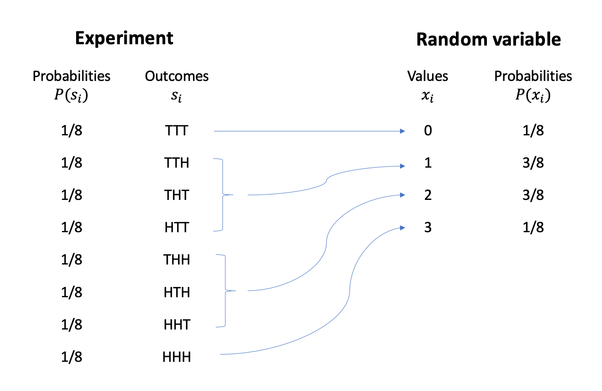

LEARNING OBJECTIVES
Consider throwing three fair coins. The sample space of this random experiment is
\[ S = \{ TTT, \ TTH, \ THT, \ HTT, \ THH, \ HTH, \ HHT, \ HHH \} \]
Each outcome has an equal chance of occurring of \(1 / 8 = 0.125\), computed as one outcome divided by the total number of possible outcomes.
Often, we are only interested in a numerical summary of the random experiment. One such summary could be the total number of heads.
Random variable
We call a numerical summary of a random process a random variable.
Random variables are typically denoted using the last uppercase letters of the alphabet (\(X, Y, Z\)). Sometimes we might also use an uppercase letter with a subscript to distinguish them, e.g. \(X_1, X_2, X_3\).
A random variable, like a random experiment, also has a sample space and this is called the support or range of \(X\), written \(R_X\). This represents the set of possible values that the random variable can take.
There are two different types of random variables, and the type is defined by their range.
We call a variable discrete or continuous depending on the “gappiness” of its range, i.e. depending on whether or not there are gaps between successive possible values of a random variable.
A discrete random variable has gaps in between its possible values. An example is the number of children in a randomly chosen family (0, 1, 2, 3, …). Clearly, you can’t have 2.3 children…
A continuous random variable has no gaps in between the its possible values. An example is the height in cm of a randomly chosen individual.
In this week’s exercises we will study discrete random variables.
In the 3 coins example, the possible values of the random variable \(X\) = “number of heads in 3 tosses” are \[ R_X = \{0, 1, 2, 3\} \]
meaning that \(X\) is a discrete random variable.
We denote a potential value of the random variable using a lowercase \(x\) and a subscript to number the possible values.
This is obtained as follows: 
As we can see, each value of the random variable is computed from the underlying random experiment. There is one outcome only (TTT) leading to zero heads, i.e. \(X = 0\). There are three outcomes (TTH, THT, HTT) leading to one head, i.e. \(X = 1\). And so on…
The experiment’s outcomes are all equally likely, each having a \(1/8\) chance of occurring. However, since the random variable aggregates the experiment’s outcomes, the probability of the random variable taking a particular value is computed by summing the probabilities of the outcomes leading to that value.
Let’s try and obtain the same diagram as that shown above using R. We will be using the function expand_grid, which creates the sample space by listing all possible combinations.
library(tidyverse)
experiment <- expand_grid(coin1 = c('T', 'H'),
coin2 = c('T', 'H'),
coin3 = c('T', 'H'))
experiment## # A tibble: 8 x 3
## coin1 coin2 coin3
## <chr> <chr> <chr>
## 1 T T T
## 2 T T H
## 3 T H T
## 4 T H H
## 5 H T T
## 6 H T H
## 7 H H T
## 8 H H Hexperiment <- experiment %>%
mutate(
prob = rep( 1/n(), n() )
)
experiment## # A tibble: 8 x 4
## coin1 coin2 coin3 prob
## <chr> <chr> <chr> <dbl>
## 1 T T T 0.125
## 2 T T H 0.125
## 3 T H T 0.125
## 4 T H H 0.125
## 5 H T T 0.125
## 6 H T H 0.125
## 7 H H T 0.125
## 8 H H H 0.125rv <- experiment %>%
mutate(
value = (coin1 == 'H') + (coin2 == 'H') + (coin3 == 'H')
) %>%
group_by(value) %>%
summarise(prob = sum(prob))
rv## # A tibble: 4 x 2
## value prob
## <int> <dbl>
## 1 0 0.125
## 2 1 0.375
## 3 2 0.375
## 4 3 0.125where \(1/8 = 0.125\) and \(3/8 = 0.375\).
We can provide a concise representation of a random variable \(X\), the set of all its possible values, and the probabilities of those values by providing the probability distribution of \(X\). You can think of the probability distribution of a random variable as a succinct way to provide a global picture of the random variable.
Probability distribution
The probability distribution of a discrete random variable \(X\) provides the possible values of the random variable and their corresponding probabilities.
A probability distribution can be in the form of a table, graph, or mathematical formula.
We visualise the distribution of a discrete random variable via a line graph. This graph gives us, with just a glance, an immediate representation of the distribution of that random variable.
ggplot(data = rv) +
geom_segment(aes(x = value, xend = value, y = 0, yend = prob)) +
geom_point(aes(x = value, y = prob)) +
labs(x = "Possible values, x", y = "Probabilities, P(X = x)")As you can see, a line graph has gaps in between the possible values the random variable can take, exactly to remind us that the random variable can’t take values that are different from 0, 1, 2, and 3.
Alternatively, you could provide the probability distribution of the random variable in tabular form:
| x | P(X = x) |
|---|---|
| 0 | 1/8 |
| 1 | 3/8 |
| 2 | 3/8 |
| 3 | 1/8 |
Statisticians have also spent lots of time trying to find a mathematical formula for that probability distribution. The formula is the most concise way to obtain the probabilities as it gives you a generic rule which you can use to compute the probability of any possible value of that random variable. All you have to do is substitute to \(x\) the value you are interested in, e.g. 0, 1, 2, or 3.
Probability mass function
The probability mass function (pmf) of \(X\) assigns a probability, between 0 and 1, to every value of the discrete random variable \(X\).
Either of the following symbols are often used: \[ f(x) = P(x) = P(X = x) \qquad \text{for all possible }x \] where \(P(X = x)\) reads as “the probability that the random variable \(X\) equals \(x\)”.
The sum of all of these probabilities must be one, i.e. \[ \sum_{i} f(x_i) = \sum_{i} P(X = x_i) = 1 \]
Before we define the mathematical function, I need to tell you what a number followed by an exclamation mark means.
In mathematics \(n!\), pronounced “\(n\) factorial”, is the product of all the integers from 1 to \(n\). For example, \(4! = 4 \cdot 3 \cdot 2 \cdot 1 = 24\), and \(3! = 3 \cdot 2 \cdot 1 = 6\). By convention, mathematician have decided that \(0! = 1\).
The probability function of \(X\) = “number of heads in 3 tosses” makes use of the following numbers:
For the three coins example, the probability function of \(X\) is \[ P(X = x) = \frac{3!}{x!\ (3-x)!} \cdot (1/2)^x \cdot (1/2)^{3-x} \]
Let’s see if the formula gives back the table we created above.
For \(x=0\) we have:
\[ P(X = 0) = \frac{3!}{0!\ 3!} \cdot (1/2)^0 \cdot (1/2)^3 = \frac{6}{6} \cdot 1 \cdot (1/8) = 1/8 \]
And so on… If you want to see the rest, check the optional box below.
As you can see, this formula will provide you the same values that are listed in the tabular representation of the probability distribution.
Consider a discrete random variable with range \(R_X = \{x_1, x_2, \dots, x_n\}\)
The expected value (or mean) of a random variable \(X\), denoted by \(E(X)\), \(\mu\), or \(\mu_X\), describes where the probability distribution of \(X\) is centred.
We tend to prefer the name “expected value” to “mean” as the random variable is not something the has happened yet, it’s a potentially observable value. So, the expected value is the typical value we expect to observe.
The expected value of \(X\) is computed by multiplying each value by its probability and then summing everything:
\[ \begin{aligned} \mu = E(X) &= x_1 \cdot P(x_1) + x_2 \cdot P(x_2) + \cdots + x_n \cdot P(x_n) \\ &= \sum_{i} x_i \cdot P(x_i) \end{aligned} \]
For the three coins, the expected value is: \[ \mu = 0 \cdot \frac{1}{8} + 1 \cdot \frac{3}{8} + 2 \cdot \frac{3}{8} + 3 \cdot \frac{1}{8} = \frac{3}{2} = 1.5 \]
As you can see, 1.5 is not one of the possible values that \(X\) can take in that case, as it lies in the gap between the values 1 and 2. However, it is a fictitious number which seems to well represent the centre of that distribution and hence a typical value from that distribution.
The variability of a random variable \(X\) is measured by its standard deviation.
Variance and standard deviation
If \(X\) has expected value \(\mu\), the variance of \(X\) is \[ \sigma^2 = \sum_i (x_i - \mu)^2 \cdot P(x_i) \] and the standard deviation is defined as \[ \sigma = \sqrt{\sigma^2} \]
As we saw, each random variable is a numerical summary of a random experiment and, as such, it arises from an underlying random experiment.
In this section we will analyse different random experiments, also called models, commonly arising in every day situations.
NOTATION
\(p\) is the probability of a success on any one trial, and \(n\) is the number of trials.
Suppose you have a series of trials that satisfy these conditions:
B: They are Bernoulli — that is, each trial must have one of two different outcomes, one called a “success” and the other a “failure.”
I: Each trial is independent of the others — that is, the probability of a success doesn’t change depending on what has happened before.
N: There is a fixed number, \(n\), of trials.
S: The probability, \(p\), of a success is the same on each trial, with \(0 \leq p \leq 1\).
Then the distribution of the random variable \(X\) that counts the number of successes in \(n\) trials (each with a probability of success = \(p\)) is called a binomial distribution.
The numbers \(n\) and \(p\) are called the parameters of the binomial distribution. We write that \(X\) follows a binomial distribution with parameters \(n\) and \(p\) as follows: \[ X \sim \text{Binomial}(n,p) \]
Further, the probability that you get exactly \(X = x\) successes is \[ P(X = x) = \frac{n!}{x!\ (n-x)!} \cdot p^x \cdot (1-p)^{n-x}, \qquad R_X = \{0, 1, 2, ..., n\} \] where \(n! = n (n-1) (n-2) \cdots 3 \cdot 2 \cdot 1\).
Do you recognise it from the coins example?
Figure 1: The binomial probability distribution as n and p vary.
For a random variable \(X\) having a binomial distribution with \(n\) trials and probability of success \(p\), the mean (expected value) and standard deviation for the distribution are given by \[ \mu_X = n p \qquad \text{and} \qquad \sigma_X = \sqrt{n p (1 - p)} \]
The function to compute the binomial probability distribution is
dbinom(x, size, prob)where:
x is the values for which we want to compute the probabilitiessize is \(n\) in our notation, the number of trialsprob is \(p\) in our notation, the probability of success in each trial.A student is attempting a 10-questions multiple choice test. Each question has four different options. If the student answers at random, what is the chance that they correctly answers 2 out of the 10 questions?
As we know that the student is randomly guessing the answers, the probability of a correct answer is \(p = 1/4\). The probability of answering 2 questions correctly out of the 10 in the test is \(P(X = 2)\):
dbinom(x = 2, size = 10, prob = 1/4)## [1] 0.2815676In a multiple choice test comprising 10 questions having each 4 possible answers, there is a 28% chance of answering exactly 2 questions out of 10 correctly just by random guessing.
Note that you can also compute the probabilities for all possible values of \(X\) at once:
tibble(
values = 0:10,
prob = dbinom(x = 0:10, size = 10, prob = 1/4)
)## # A tibble: 11 x 2
## values prob
## <int> <dbl>
## 1 0 0.0563
## 2 1 0.188
## 3 2 0.282
## 4 3 0.250
## 5 4 0.146
## 6 5 0.0584
## 7 6 0.0162
## 8 7 0.00309
## 9 8 0.000386
## 10 9 0.0000286
## 11 10 0.000000954Suppose you have a series of trials that satisfy these conditions:
They are Bernoulli — that is, each trial must have one of two different outcomes, one called a “success” and the other a “failure”.
Each trial is independent of the others; that is, the probability of a success doesn’t change depending on what has happened before.
The trials continue until the first success.
The probability, \(p\), of a success is the same on each trial, \(0 \leq p \leq 1\).
Then the distribution of the random variable \(X\) that counts the number of failures before the first “success” is called a geometric distribution.
The probability that the first success occurs after \(X = x\) failures is \[ P(X = x) = (1 - p)^{x} p, \qquad R_X = \{0, 1, 2, ...\} \]
We write that \(X\) follow a geometric distribution with parameter \(p\) as follows: \[ X \sim \text{Geometric}(p) \]
The figure below displays different geometric distributions as \(p\) varies:
A random variable \(X\) that has a geometric distribution with probability of success \(p\) has an expected value (mean) and standard deviation of \[ \mu_X = \frac{1 - p}{p} \qquad \text{and} \qquad \sigma_X = \sqrt{\frac{1-p}{p^2}} \]
The function to compute the geometric probability distribution is
dgeom(x, prob)where:
x is the number of failures before the first successprob is \(p\) in our notation, the probability of success in each trial.Consider rolling a fair six-sided die until a five appears. What is the probability of rolling the first five on the third roll?
First, note that the probability of “success” (observing a five) is \(p = 1/6\). We are asked to compute the probability of having the first “success” on the 3rd trial. We want to compute \(P(X = 2)\) because we need to have 2 failures followed by a success:
dgeom(x = 2, prob = 1/6)## [1] 0.1157407Thus, there is a 12% chance of obtaining the first five on the 3rd roll of a die.
Consider throwing 2 six-sided dice. Using the expand_grid(), mutate(), group_by(), and summarise() functions, compute the probability distribution of the discrete random variable
\[
X = \text{sum of the two faces}
\]
Check if the two requirements of probability functions are met:
Plot the probability distribution of the random variable \(X\) = “sum of the faces of two dice” which you derived in the previous question.
Comment on what the distribution tells us.
Compute the centre and spread of the distribution and interpret them in context.
Create a graph showing the distribution of a Binomial random variable \(X\) when \(n = 10\) and \(p = 0.5\).
Create a graph showing the distribution of a Geometric random variable \(X\) when \(p = 0.5\).
Consider a random variable \(X\) having the following distribution. Compute the expected value and standard deviation of \(X\).
| Value | Probability |
|---|---|
| 0 | \(1 - p\) |
| 1 | \(p\) |
According to a briefing paper to the UK House of Commons, nearly 29% of the population, or 19 million, live below the poverty level.1 Suppose these figures hold true for the region in which you live. You plan to randomly sample 25 individuals from your region.
What is the probability that your sample will include at least two people with incomes below the poverty level?
Hint: \(P(X \geq 2) = 1 - P(X = 0) - P(X = 1)\).
What are the expected value and standard deviation of the number of people in your sample with incomes below the poverty level?
A recent survey has found that about 16% of residents have no home insurance. You are to randomly sample 20 residents for a survey.
What is the probability that your sample will include at least three people who do not have home insurance?
What are the expected value and standard deviation of the number of people in your sample without home insurance?
Suppose you are rolling a pair of dice and waiting for a sum of 7 to occur.
What is the probability that you get a sum of 7 for the first time on your first roll?
What is the probability that you get a sum of 7 for the first time on your second roll?
What is the probability that it takes more than 10 rolls to get a sum of 7?
Hint: Getting a success for the first time on the 3rd trial means having 2 failures first, so we would use dgeom(2, p).
A light bulb company advertises a fault rate of 1.1%
Suppose you buy 20 light bulbs all of the same model by randomly picking one from 20 different stores in your area.
You find that among the bulbs that you bought, the number of faulty ones is 3 out of 20.
Visualise the probability distribution of the number of faulty light bulbs out of a sample of 20, if the probability of a faulty light bulb is truly 1.1%
What’s the chance of observing 3 faulty light bulbs out of 20, if the true fault rate is 1.1%?
Based on your answer to part b, do you think there is enough evidence to doubt the fault rate advertised by the company? In other words, under the advertised fault rate of 1.1%, is this chance of getting 3 faulty bulbs out of 20 high enough to support the company’s claim?
Source: Poverty in the UK: statistics, Briefing Paper Number 7096, 18 June 2020, https://researchbriefings.files.parliament.uk/documents/SN07096/SN07096.pdf.↩︎